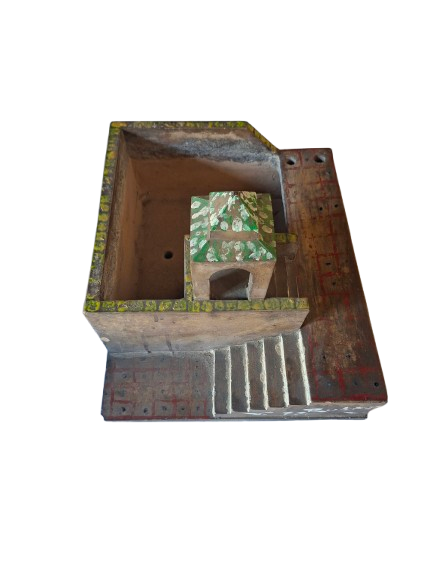
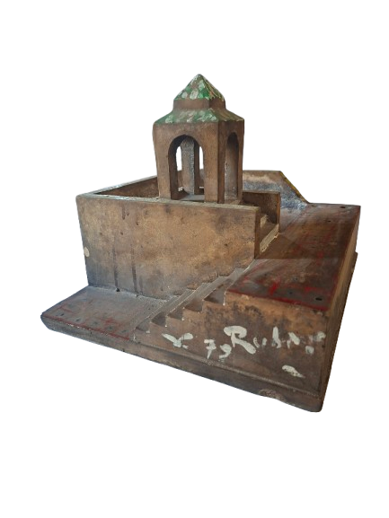
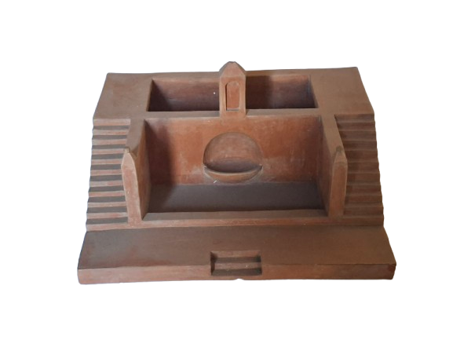
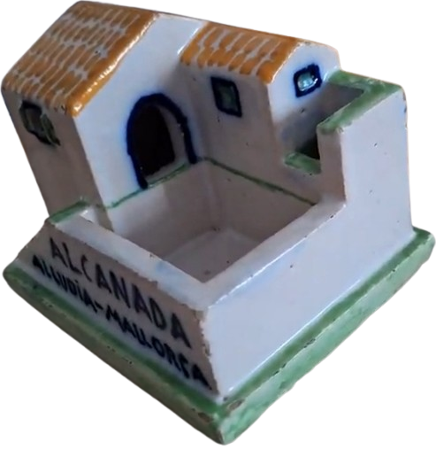
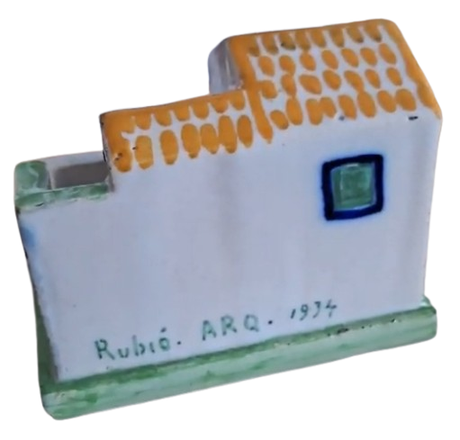
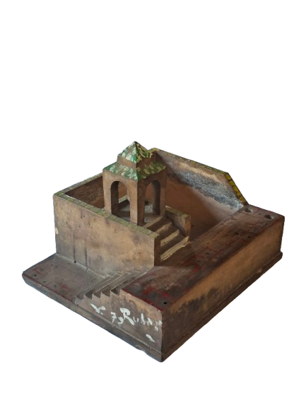
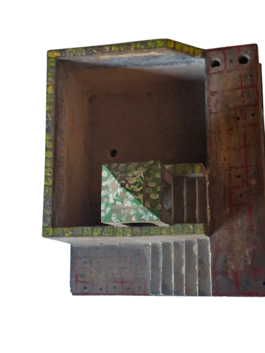

History
Origins of the Parlour Garden · 1926
The spring of 1926 marked the beginning of an unlikely collaboration at the intersection of three disciplines. Architect and landscape designer Nicolau M. Rubió i Tudurí, ceramicist Josep Llorens i Artigas, and French painter Raoul Dufy joined forces to create a series of jardinets de saló — parlour gardens — miniature ceramic worlds that compressed the spirit of the natural landscape into vessels small enough to rest on a table.
Drawing from the tradition of miniature gardens reaching back to ancient Egypt, and deeply inflected by the Japonist sensibility that had captivated European art since the late nineteenth century, these works proposed something new: the garden not as a place to inhabit, but as an image to contemplate. Evocation over reproduction. Essence over extent.
Each piece was made of glazed ceramic at approximately 45 × 45 × 25 cm — a format that merged the architectural model, the decorative object, and the living planter into a single form. The aesthetic moved fluidly between Art Nouveau and Fauvism, anchored always in a Mediterranean sensibility shared by all three creators.
Original Models








The Three Creators
Raoul Dufy
Le Havre, 1877 — Forcalquier, 1953
Painter, ceramicist and designer, Dufy brought his vibrant Fauvist sensibility to the ceramic surfaces — vivid colour, quotidian Mediterranean life, a charged intimacy between decoration and structure. His contribution transformed the vessel into a painted landscape.
Llorenç Artigas
Barcelona, 1892 — 1980
Ceramicist and central figure of the Noucentistes, Artigas gave physical form to the collaboration — mastering the interplay between natural materials and a modernist aesthetic rooted in the Mediterranean. He later worked closely with Joan Miró on monumental ceramic murals.
Nicolau M. Rubió i Tudurí
Maó, 1891 — 1981
Architect, landscape designer, and director of Parks and Gardens for Barcelona City Council, Rubió conceived the garden as an imaginative vessel — a container for dreams rather than mere cultivation. His parks still define Barcelona's green infrastructure today.